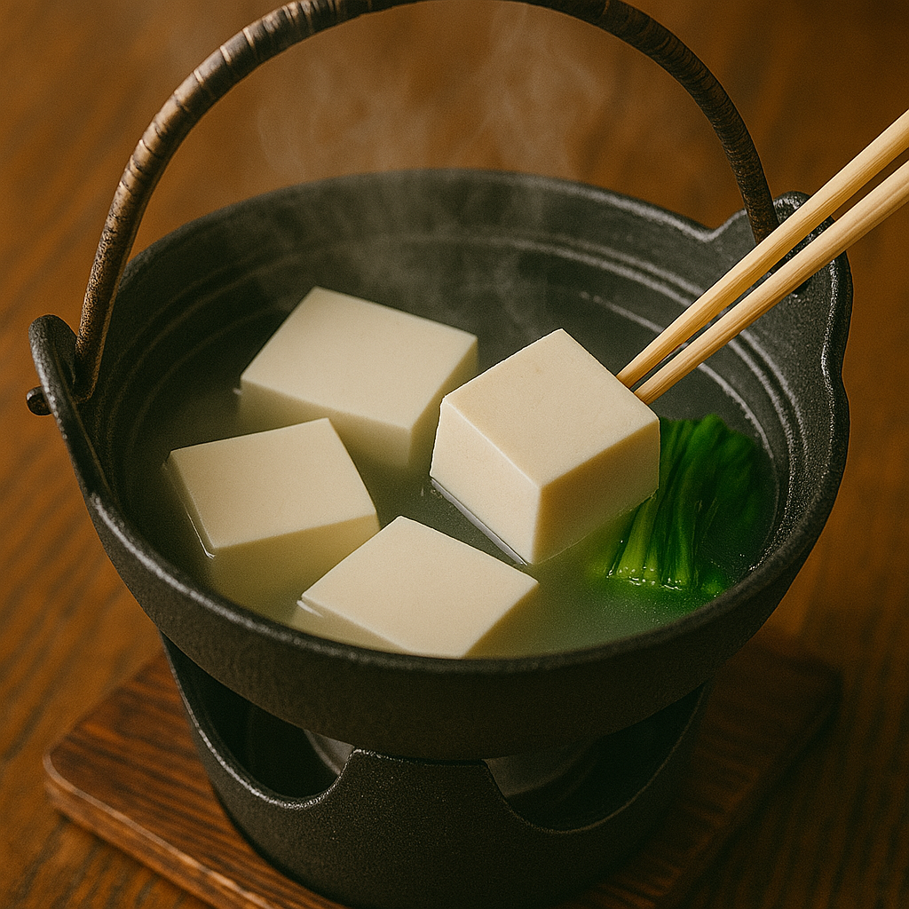
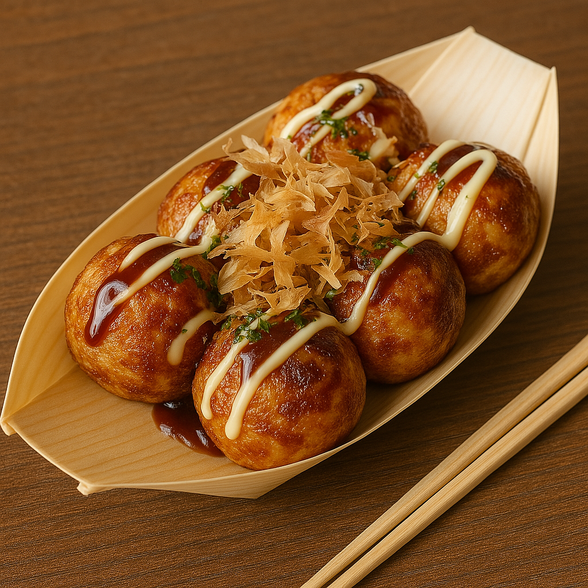
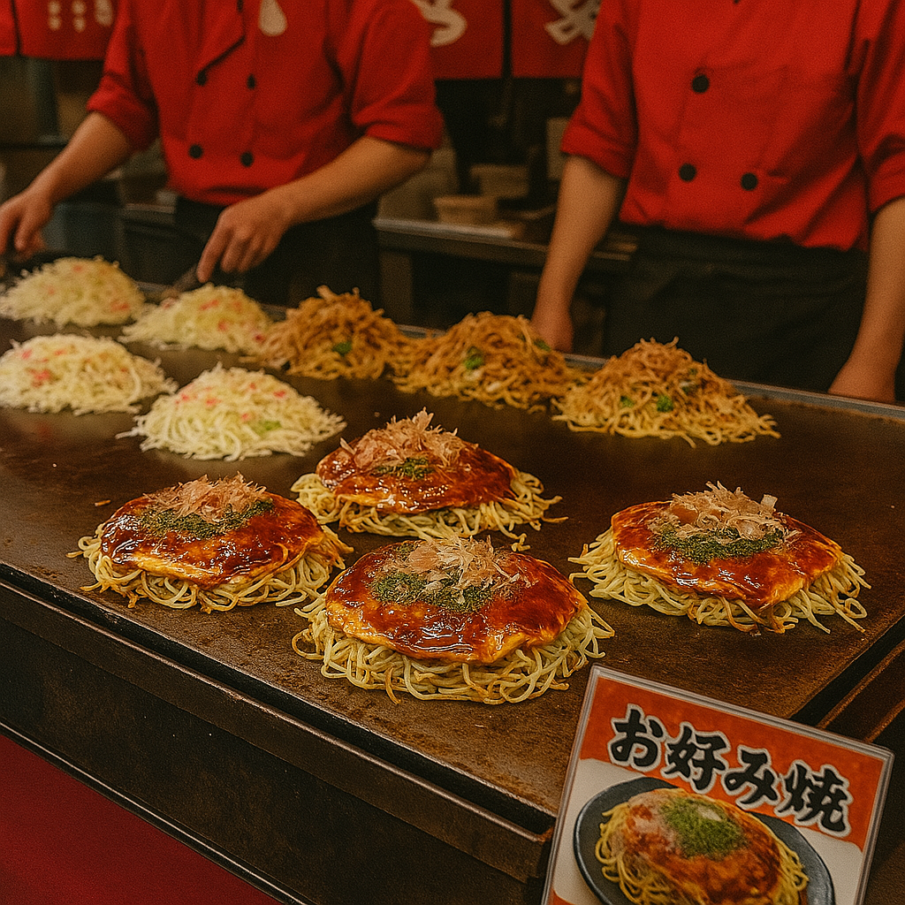
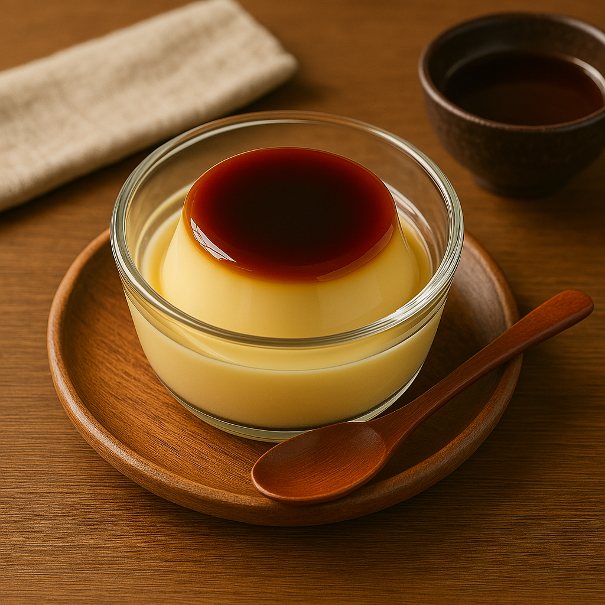

🍱 Ultimate Japan Eating Plan
Total Budget: $270 (mix of konbini + 1 solid meal/day)
2-3 premium meals okay within $2,000 cap
🗼 Tokyo (Days 2-4, 13-14)


Style: Iconic eats + nightlife + casual bites
🌅 Breakfast
Kissaten café or konbini (egg sandwich/onigiri)


🍱 Lunch
- Day 2: Sushi at Tsukiji Market
- Day 3: Kaiseki or izakaya lunch near Ginza/Odaiba
- Day 13: Kaiten sushi or kaisen don at Uogashi Nihon-Ichi


🌙 Dinner
- Ramen in Shinjuku (Ichiran/Ippudo)
- Yakitori in Omoide Yokocho
- Omakase in Shibuya

🍪 Snacks
Taiyaki, matcha soft cream, Harajuku crepes

🍂 Nikko (Day 4)
.png)


Style: Light & local
🍱 Lunch
Yuba dishes (tofu skin)
🍨 Sweets
Matcha ice cream, mochi
💡 Pro Tip
Pack konbini snacks for the day
♨️ Hakone (Day 5)


Style: Onsen comfort + local delicacies
🥚 Must-Tries
Black eggs, onsen tamago, soba noodles
🍱 Dinner
Kaiseki ryori at ryokan
🍦 Dessert
Matcha soft cream
🍵 Kyoto (Days 6-7)



Style: Elegant + seasonal + tofu-forward
🍵 Breakfast
Matcha parfait, wagashi
🍱 Lunch
- Day 6: Obanzai or matcha café
- Day 7: Nishiki Market snacks


🥘 Dinner
- Yudofu dinner
- Shojin ryori
🍨 Snacks
Yatsuhashi, tofu soft serve


🍵 Tea & Sweets


🦌 Nara + Osaka (Day 8)


Style: Street food paradise
🍱 Nara Lunch
Kakinoha sushi, mochi
🥘 Osaka Dinner
- Takoyaki
- Okonomiyaki
- Kushikatsu
- Taiyaki




🕊️ Hiroshima + Miyajima (Days 9-10)


Style: Soulful, seafood-focused
🍱 Lunch
Okonomimura
🦪 Miyajima Snacks
Momiji manju, oysters
🍺 Dinner
Hiroshima izakaya, lemon sours
🍜 Fukuoka (Day 10)


Style: Ramen capital
🍜 Lunch
Tonkotsu ramen
🥘 Dinner
Yatai stalls - yakitori, gyoza, mentaiko
🍓 Dessert
Amaou strawberries
♨️ Beppu (Day 11)



Style: Onsen-infused
🥘 Lunch
Jigoku mushi (hell-steamed dishes)
🍱 Dinner
Kaiseki at ryokan
🍮 Snack
Onsen-pudding
🏞️ Takachiho (Day 12)


Style: Rural comfort
🍱 Lunch
Chicken nanban, local soba
🥩 Dinner
Kumamoto beef
🍤 Snack
Tofu or veg tempura
🍵 Treats to Try Anywhere


- Matcha lattes
- Japanese whisky
- Hokkaido soft cream
- Rare KitKats & Pocky